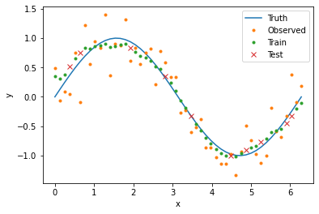

Quickstart#
The Basics#
The WeAve package has four main components:
The Smoother class, which computes weighted averages across data.
The Dimension class, where you specify how weights are computed for each dimension in your data.
The kernel functions, which compute weights given the distances between points.
The distance functions, which compute the distances between points.
In this tutorial, we will smooth noisy data across one dimension. We will start by importing all of the packages we will be using.
import matplotlib.pyplot as plt
import numpy as np
import pandas as pd
import seaborn as sns
from weave.dimension import Dimension
from weave.smoother import Smoother
Data#
WeAve works with data in the form of Pandas data frames. The following code generates and plots our data set.
n_obs = 50
x_val = np.linspace(0, 2*np.pi, n_obs)
y_true = np.sin(x_val)
y_obs = y_true + 0.3*np.random.normal(size=n_obs)
data = pd.DataFrame({
'x_id': np.arange(n_obs),
'x_val': x_val,
'y_true': y_true,
'y_obs': y_obs
})
plt.plot(x_val, y_true, label='Truth')
plt.plot(x_val, y_obs, '.', label='Observed')
plt.xlabel('x')
plt.ylabel('y')
plt.legend()

Dimension#
To smooth data using WeAve, we first need to specify the dimensions in our data by creating an instance of the Dimension class. This object contains information about how weights are computed. Many dimension parameters have defaults, but at the minimum we need to include name. This corresponds to the column in our data frame containing unique point IDs.
age = Dimension('x_id')
The dimension object above will have the default identity kernel (i.e., weights are equal to distances) and Euclidean distance. Weights are computed using data from the column of our data frame corresponding to the dimension attribute coordinates, which is automatically assigned to the name parameter if not specified.
To compute weights based on a column other than ‘x_id’, we can include the coordinates parameter. Values in this column do not need to be unique, unlike those corresponding to name.
age = Dimension('x_id', 'x_val')
All kernels other than the identity kernel have additional parameters. For this tutorial, we will use the exponential kernel which requires a kernel radius. The following code creates our smoothing dimension with default Euclidean distance.
dimension = Dimension(
name='x_id',
coordinates='x_val',
kernel='exponential',
radius=0.5
)
Smoother#
Our next step is to create an instance of the Smoother class using the dimension object defined above. While this tutorial only uses one dimension, you can also input multiple dimensions in a list.
smoother = Smoother(dimension)
To smooth our noisy data, we simply provide our data frame and the name of the column or columns we would like to smooth (parameter observed). The output is a copy of the input data frame with appended column(s) containing the smoothed data. You can specify the column names of the smoothed values with the parameter smoothed, otherwise ‘_smooth’ will be appended to the column names in observed. The following code smooths our data and plots the results.
result = smoother(data, 'y_obs', smoothed='y_smooth')
plt.plot(x_val, y_true, label='Truth')
plt.plot(x_val, y_obs, '.', label='Observed')
plt.plot(result['x_val'], result['y_smooth'], '.', label='Smoothed')
plt.xlabel('x')
plt.ylabel('y')
plt.legend()

Choosing Parameters#
The degree of smoothing is influenced by the choice of kernel parameters, so it’s important to find parameters that produce smooth results but don’t oversmooth. Below we see our example with values smoothed using radii between zero and one. Radius values near zero hardly smooth the data at all, while values near one smooth the data too much, moving points away from the true curve and towards the data average.
results = []
radii = np.arange(0.01, 1., 0.01)
for radius in radii:
smoother.dimensions[0].radius = radius
result = smoother(data, 'y_obs', smoothed='y_smooth')
result['radius'] = radius
results.append(result)
results = pd.concat(results)
ax = sns.scatterplot(data=results, x='x_val', y='y_smooth', hue='radius', alpha=0.1)
ax.plot(x_val, y_true)
ax.plot(x_val, y_obs, '.')
ax.set_xlabel('x')
ax.set_ylabel('y')

To explore the tradeoff between data fidelity (i.e., how closely the smoothed data follows the true curve) and smoothness, we can define functions that measure each of these properties and evaluate them for different radius values.
Train/Test Split#
We will use cross-validation to compare our model error for different radii. In this framework, we randomly split our data into two sets: 80% will go into the training set and 20% will go into the test set. For each point in the test set, we will compute smoothed values using weighted averages composed only of points in the training set. In this way, we can infer how our model would perform on new or missing data. The following code splits our data into the two sets and creates corresponding boolean columns in our data frame.
data['train'] = True
data.loc[np.random.choice(data['x_id'], size=n_obs//5, replace=False), 'train'] = False
data['test'] = data['train'] == False
plt.plot(x_val, y_true, label='Truth')
plt.plot(data[data['train']]['x_val'], data[data['train']]['y_obs'], '.', label='Train')
plt.plot(data[data['test']]['x_val'], data[data['test']]['y_obs'], 'x', label='Test')
plt.xlabel('x')
plt.ylabel('y')
plt.legend()

Metrics#
Next we define functions that measure the error and smoothness of our model output. For error, we compute the mean absolute difference between the true curve and the smoothed values in the test set. For smoothenss, we compute the mean absolute difference between consecutive values in the entire data set.
When calling the smoother object, the optional parameters fit and predict correspond to the columns in the data frame indicating which points to use in the weighted averages and which points to smooth, respectively. If not supplied, both default to the entire input data frame.
def get_error(radius):
smoother.dimensions[0].radius = radius
result = smoother(data, 'y_obs', smoothed='y_smooth', fit='train', predict='test')
return np.mean(np.abs(result['y_true'] - result['y_smooth']))
def get_smoothness(radius):
smoother.dimensions[0].radius = radius
result = smoother(data, 'y_obs', smoothed='y_smooth', fit='train')
return np.mean(np.abs(np.diff(result['y_smooth'])))
Grid Search#
To find the best radius value in terms of error and smoothness, we evaluate our performance functions for radius values between zero and one. This is known as a grid search. For problems with multiple dimensions and parameters, a grid search can be inefficient, but there are other hyperparameter optimization methods that can be used instead.
Because our error and smoothness metrics will have different optimal radii, we create a third metric that combines the two properties. For this example, we assume that error is twice as important as smoothness, so we use a convex combination of the two metrics with weights that reflect this assumption.
error = np.array([get_error(radius) for radius in radii])
smoothnesss = np.array([get_smoothness(radius) for radius in radii])
combined = 2/3*error + 1/3*smoothness
plt.plot(radii, error, label='Error')
plt.plot(radii, smoothness, label='Smoothness')
plt.plot(radii, combined, label='Combined')
plt.plot(radii[np.argmin(error)], np.min(error), 'k*', markersize=15)
plt.plot(radii[np.argmin(smoothness)], np.min(smoothness), 'k*', markersize=15)
plt.plot(radii[np.argmin(combined)], np.min(combined), 'k*', markersize=15)
plt.xlabel('Radius')
plt.ylabel('Performance')
plt.legend(loc='upper right')

For the exponential kernel, a larger radius produces smoother output, while the lowest test error occurs at 0.21. Our combined metric is minimized at a radius of 0.32, with smoothed data plotted below.
